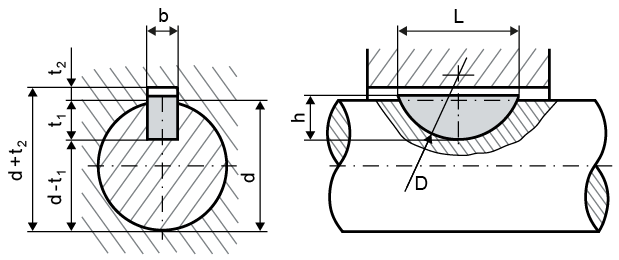
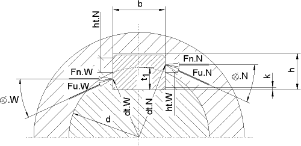

|
|
|


标准轮廓
您可以从列表框中选择这些标准之一：
- （高轮毂槽）
- （低轮毂槽）
选择用于计算半圆键的标准后，将显示相应值的列表。
| b：宽度 | d：直径 |
| h：高度 | t1：轴槽深度 |


图 40.1：按 Niemann 定义进行计算的带圆周力和法向力的半圆键
注意：
选择选项以定义您自己的半圆键。
English Original
Standard profiles
You can select one of these standards from the selection list:
- (high hub groove)
- (low hub groove)
After you select the standard for calculating the Woodruff key, a list of corresponding values is displayed.
| b: Width | d: Diameter |
| h: Height | t1: Shaft groove depth |
Figure 40.1: Woodruff key with circumferential and normal forces for the calculation as defined in Niemann
Note:
Select the option to define your own Woodruff keys.